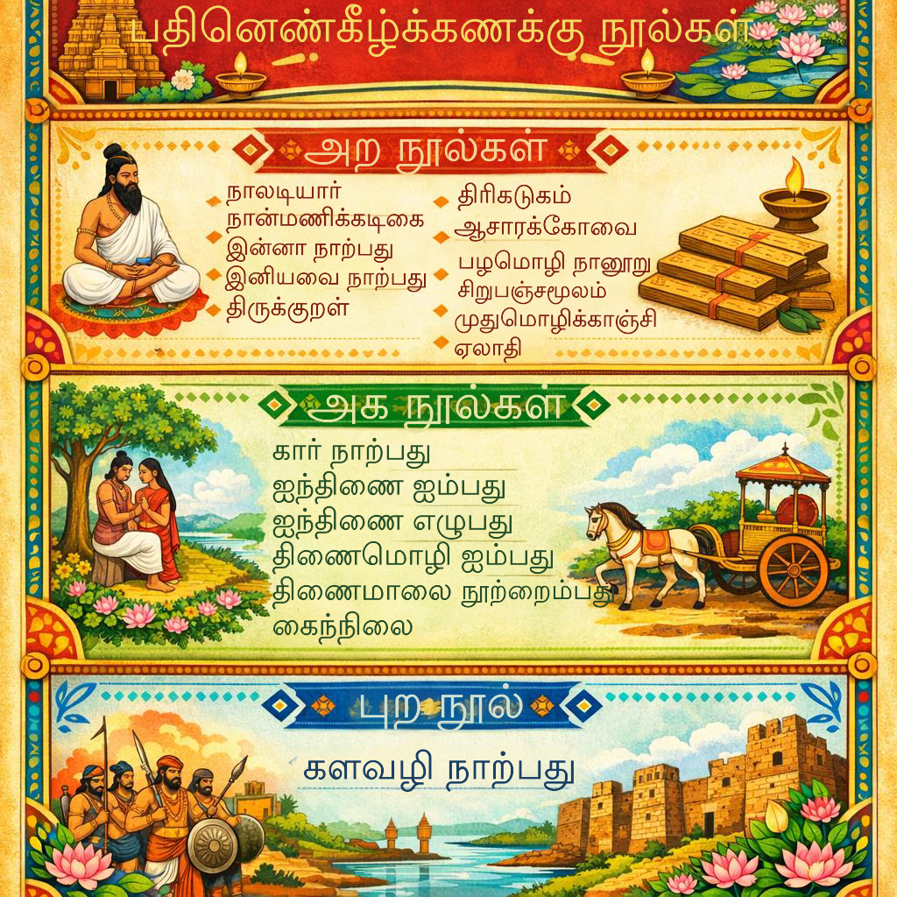

சங்கம் மருவிய காலம்
சங்கம் மருவிய காலம்
பதினெண்கீழ்க்கணக்கு நூல்கள் (18)
இவை சங்க காலத்திற்குப் பிந்தைய (சங்கம் மருவிய காலம்) நீதி மற்றும் அறநெறி நூல்கள்

அற நூல்கள் (11):
- நாலடியார்
- நான்மணிக்கடிகை
- இன்னா நாற்பது
- இனியவை நாற்பது
- திருக்குறள்
- திரிகடுகம்
- ஆசாரக்கோவை
- பழமொழி நானூறு
- சிறுபஞ்சமூலம்
- முதுமொழிக்காஞ்சி
- ஏலாதி
அக நூல்கள் (6):
- கார் நாற்பது
- ஐந்திணை ஐம்பது
- ஐந்திணை எழுபது
- திணைமொழி ஐம்பது
- திணைமாலை நூற்றைம்பது
- கைந்நிலை
புற நூல் (1):
- களவழி நாற்பது
திருக்குறள் சிறப்பம்சங்கள்:
- திருக்குறள் மொத்தம் 133 அதிகாரங்களைக் கொண்டது. ஒவ்வொரு அதிகாரத்திற்கும் 10 குறட்பாக்கள் வீதம் மொத்தம் 1330 குறட்பாக்கள் உள்ளன.
- அறத்துப்பால்: 38 அதிகாரங்கள் (380 குறள்கள்).
- பொருட்பால்: 70 அதிகாரங்கள் (700 குறள்கள்).
- இன்பத்துப்பால்: 25 அதிகாரங்கள் (250 குறள்கள்).
- திருக்குறள் முழுவதும் 'தமிழ்' மற்றும் 'கடவுள்' என்ற சொற்கள் ஒருமுறை கூடப் பயன்படுத்தப்படவில்லை. இருப்பினும், முதல் அதிகாரமான 'கடவுள் வாழ்த்து' இறைவனைக் குறிக்கவே பாடப்பட்டது.
- திருக்குறளில் உள்ள மொத்த எழுத்துக்கள் 42,194. இதில் தமிழ் எழுத்துக்கள் 247-இல், 37 எழுத்துக்கள் மட்டும் பயன்படுத்தப்படவில்லை.
- திருக்குறளில் இடம் பெற்றுள்ள இரு மலர்கள்-அனிச்சம் மற்றும் குவளை.
- திருக்குறளில் இடம் பெற்றுள்ள ஒரே பழம் நெருஞ்சிப்பழம்.
- திருக்குறளில் இடம் பெற்றுள்ள ஒரே விதை குன்றிமணி.
- திருக்குறளில் இடம் பெற்றுள்ள இரண்டு மரங்கள் பனை மற்றும் மூங்கில்.
- திருக்குறளில் அதிகம் பயன்படுத்தப்பட்ட எழுத்து: 'னி' என்ற எழுத்து 1705 முறை பயன்படுத்தப்பட்டுள்ளது.
- 'ளீ' மற்றும் 'ங' ஆகிய எழுத்துக்கள் தலா ஒருமுறை மட்டுமே பயன்படுத்தப்பட்டுள்ளன.
- திருக்குறளில் பயன்படுத்தப்படாத ஒரே உயிரெழுத்து 'ஔ'.
- திருக்குறளில் இடம் பெறாத ஒரே எண் 9 – ஒன்பது.
- 'பொருட்பால்' மற்றும் 'இன்பத்துப்பால்' ஆகிய இரண்டிலும் 'குறிப்பறிதல்' என்ற அதிகாரம் இருமுறை வந்துள்ளது.
- 'கோடி' என்ற சொல் 7 இடங்களிலும், 'எழுபது கோடி' என்ற சொல் ஒரு இடத்திலும் பயின்று வந்துள்ளது. 'ஏழு' என்ற எண் 8 குறட்பாக்களில் ஆளப்பட்டுள்ளது.